Siddhesh Chaudhari · Profile preview
Local-only preview. SVGs embed their own image and font assets. No network assets are loaded.




Local-only preview. SVGs embed their own image and font assets. No network assets are loaded.

